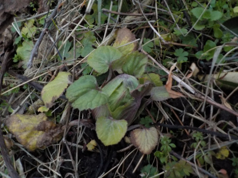
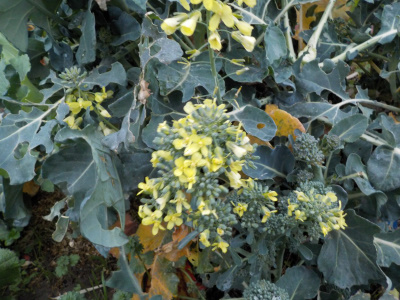
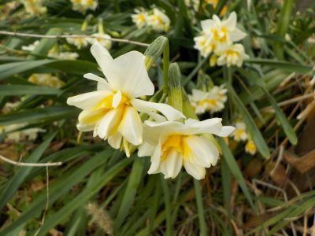
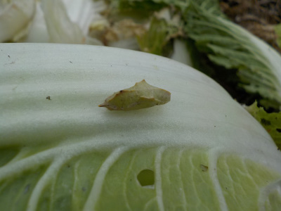

遊びで植物を育てよう
2023/01/15
フキノトウを7個収穫しました。

この時期にフキノトウがあっても珍しくないですが、たいてい1個や2個です。
7個は多いですね。
【1月TOP】
【日記TOP】
【園芸TOP】
2023/01/15
収穫していなかったのでブロッコリーの花が咲きました。

4月に花が咲くことはよくありますが、1月に花が咲くのはなかなかないんじゃないかな。
温かいので成長が速いです。
コマメに収穫して食べようと思います。
【1月TOP】【日記TOP】【園芸TOP】
2023/01/08
水仙があちこちで咲きだしました。

もう水仙の時期ですね。水仙はちょっとづつ増えてて、水仙が密集して生えてる場所があちこちあります。
今は白い水仙が多く咲いています。
【1月TOP】【日記TOP】【園芸TOP】
2023/01/08
白菜にモンシロチョウのサナギが付いていました。

白菜の何枚か内側でサナギになってました。
沢山白菜を食べて大きくなったんでしょうね.....。
【1月TOP】【日記TOP】【園芸TOP】
過去の日記
【2022年1月の日記】
【2021年1月の日記】
【2020年1月の日記】
【2019年1月の日記】
【2018年1月の日記】
【2017年１月の日記】
【2016年1月の日記】
【2015年1月の日記】
【2014年1月の日記】
【2013年1月の日記】
【1月TOP】
【日記TOP】
【園芸TOP】
畑仕事じゃないよ。
【おいしいものを食べよう。】【しっかり寝よう。】
【ソロ活をしよう!】【季節感のあることをしよう。】【動画視聴はほどほどに。】【当サイトの全てのコンテンツは無断転載禁止です。】